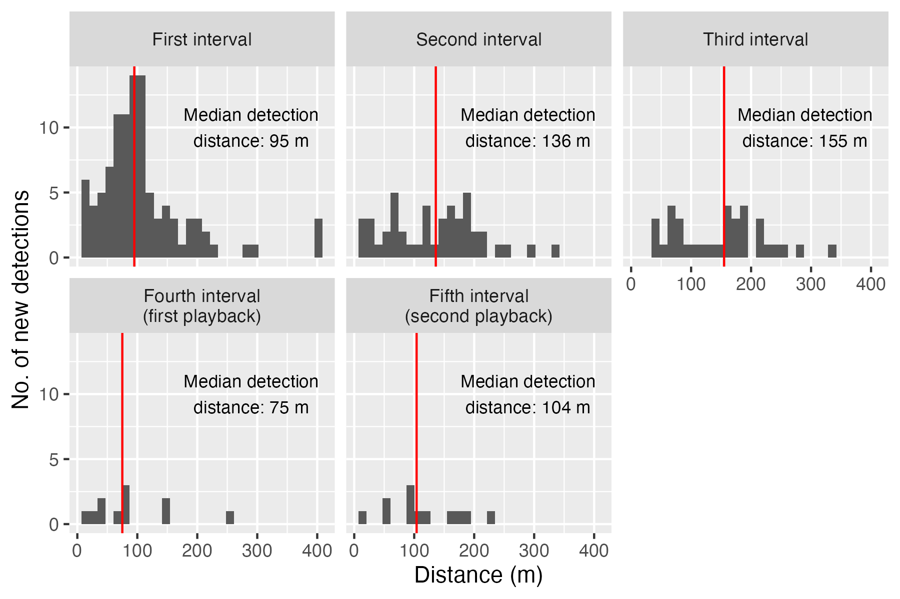
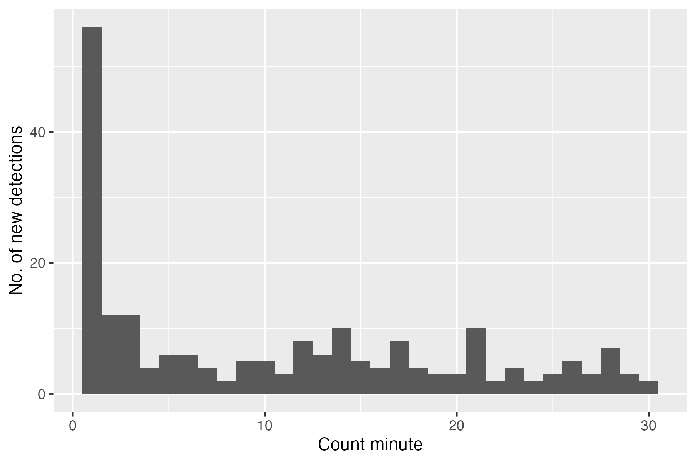
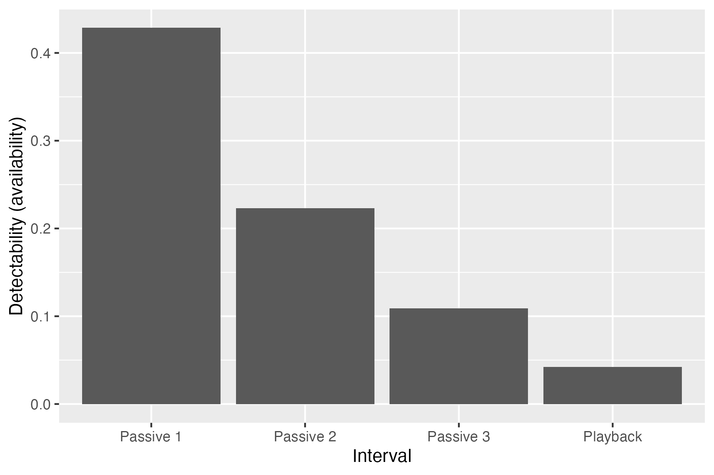

Comparative estimates of detectability in Willamette Valley Streaked Horned Larks
Summary
Repeating 30-minute point counts twice did not yield increased detectability in comparison to a single 30-minute point count. Longer (30 minute) point counts did not increase estimates of detectability when compared to shorter (8 minute) point counts. Of the three options proposed, the optimal count strategy is to conduct two, 8-minute point counts on separate days.
I found no evidence that use of playbacks increased detectability.
Key findings
Estimates of detectability did not vary substantially among the three types of counting methods considered: two 30-minute counts on different days, one 30-minute count, or 2 8-minute counts on different days.
Estimates of detectability were not higher during count periods when playbacks were used.
Distance sampling is not well-suited to the system under study and likely underestimates detectability.
Background and introduction
Ecostudies Institute requested an analysis of point-count data collected on Streaked Horned Larks in the Willamette Valley, Oregon that addressed two key questions:
Comparative estimates of detectability of Streaked Horned Larks under three different field approaches:
Two 30-minute counts on separate days;
One 30-minute count; or
Two 8-minute counts on separate days.
Comparative estimates of detectability during passive count periods and count periods during which recorded vocalizations were broadcast.
Methods
Field data were provided as a text file by Ecostudies Institute. I used R package ‘umarked’ (Kellner et al. (2023)) version 1.5.0 in R version 4.4.2 ((R Core Team 2024)) to implement a combined removal and distance-sampling model ((Amundson, Royle, and Handel 2014)) to estimate detectability and address the key questions posed above. I did not consider models containing site covariates.
Results and discussion
Temporal and spatial patterns of detection
Most Streaked Horned Larks were detected for the first time during the first 8-minute count interval and very few birds were detected in close proximity to the observer (Fig. 1). Distance sampling assumes a uniform distribution of birds as a function of the distance to the observer, that birds do not move in response to the observer, and that birds closer to the observer are more readily perceptible; that most larks were detected far from the observer suggests that one or more of these assumptions is regularly violated. In this case, either larks close to the observer avoid singing, larks move away from the observer before they are counted, or that observation points are often located in non-habitat. No matter the reason, the dearth of observations near the observer almost certainly cause the distance-sampling algorithm to produce a significant underestimate of true detectability.

Most Streaked Horned Larks are first detected during the first 9 minutes of each point count and 75% of all initial detections occur within the first 17 minutes (Fig. 2).

Comparative estimates of detectability
Two 30-minute point counts
The probability that a Streaked Horned Lark made itself available for detection during two 30-minute point counts conducted on different days was 0.62. The probability that an observer perceived a singing lark was 0.12. The joint probability that a Streaked Horned Lark was available for detection (i.e., that it sang) and that it was perceived by the observer was 0.08, implying that only 8% of individuals within 400 m of the observer (I assume based on previous analyses that this is the maximum distance at which larks are detected) make themselves available and are detected during two 30-minute counts conducted on different days. However, this estimate of overall detectability is almost certainly biased low because of the likely violations of the assumptions of distance sampling.
One 30-minute point count
The probability that a Streaked Horned Lark made itself available for detection during two 30-minute point counts conducted on different days was 0.63. The probability that an observer perceived a singing lark was 0.08. The joint probability that a Streaked Horned Lark was available for detection and that it was perceived by the observer was 0.05.
Two 8-minute point counts
The probability that a Streaked Horned Lark made itself available for detection during two 30-minute point counts conducted on different days was 0.70. The probability that an observer perceived a singing lark was 0.09. The joint probability that a Streaked Horned Lark was available for detection and that it was perceived by the observer was 0.06.
Passive versus playback periods
This analysis is based only on the removal model because the use of playbacks violates the assumptions of distance sampling (i.e., that birds do not move in response to the observer). As would be expected given the observed temporal patterns of detection (Fig. 2), playbacks did not evidently increase detections of Streaked Horned Larks (Fig. 3).

Conclusions
The most efficient protocol considered was the repeated 8-minute count.
The least efficient protocol considered was the repeated 30-minute count.
Playbacks, at least as implemented in 2024, are not effective for increasing detectability of Streaked Horned Larks in the Willamette Valley.
Distance sampling does not seem to be a useful way to account for the imperfect detectability of singing Streaked Horned Larks. It appears to greatly underestimate perceptibility. This could be due to larks moving away from survey points in response to the observer, larks avoiding singing when observers are nearby, or because most point locations are immediately surrounded by non-habitat. If used in future analyses, estimates generated by distance sampling will likely overestimate the abundance and density of larks.